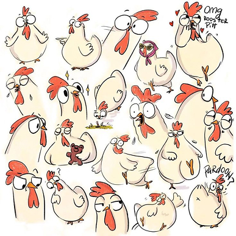

Tiene tantos estilos
- Impactante
- tal vez
- Quizas
- Depende
- Lenguaje
- Plumas erizadas
- Pico entreabierto
- Cloc cloc suave
- graznido fuerte
- Sonidos repetitivos
Sera que parpadean?
Si nos ponemos serios
Las gallinas, aunque no tienen expresiones faciales como los humanos, sí son capaces de mostrar lo que sienten a través de su comportamiento, sus movimientos y los sonidos que emiten. Cuando una gallina está relajada, suele caminar tranquila, con las plumas suaves y el cuerpo suelto. Si está estresada o asustada, puede erizar sus plumas, agacharse, emitir graznidos fuertes o incluso abrir el pico para respirar rápidamente, como si estuviera jadeando. Su cresta también dice mucho: una cresta roja y firme indica buena salud y seguridad, mientras que una pálida o caída puede reflejar incomodidad o enfermedad. Las vocalizaciones son otra forma en que se comunican; por ejemplo, cuando ponen un huevo, emiten un "cacareo" fuerte que parece celebrar lo que han hecho o simplemente llamar la atención de las demás. Si están a gusto, suelen emitir sonidos suaves y rítmicos, parecidos a un murmullo. Además, las gallinas tienen la capacidad de reconocer a otras de su grupo y formar vínculos; recuerdan rostros, entienden jerarquías y son muy observadoras. Aunque no sonrían ni frunzan el ceño, su cuerpo entero habla por ellas.